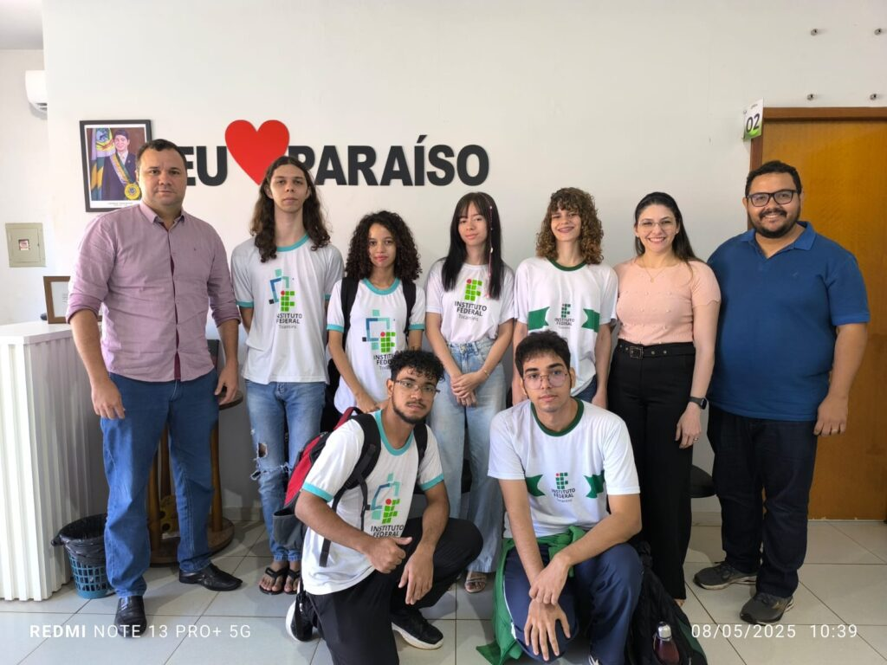
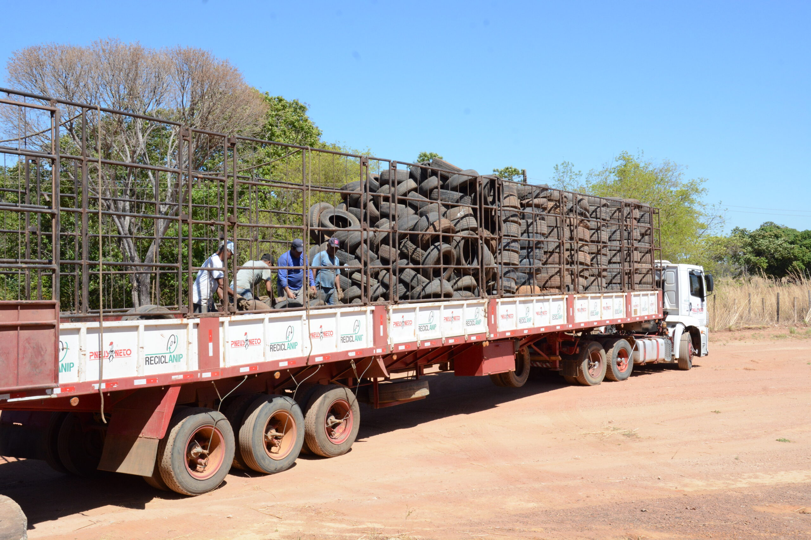
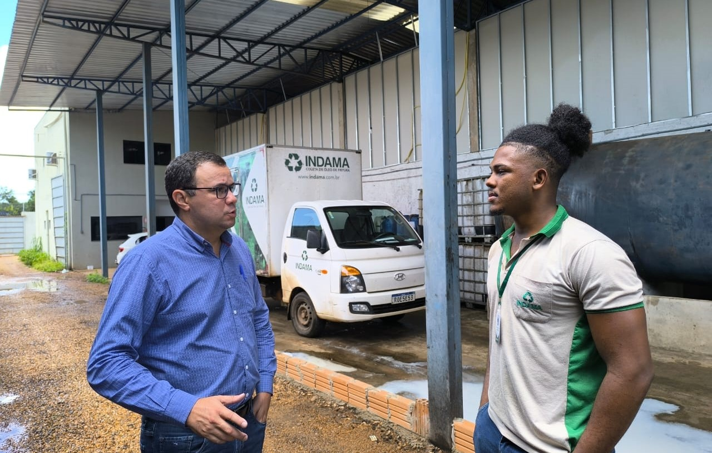

Secretaria de Meio Ambiente recebe estudantes do IFTO e acompanha primeiros resultados do projeto EcoDescarte
SAIBA MAIS

Prefeitura de Paraíso encaminha mais de 1.200 pneus para reciclagem
SAIBA MAIS

Secretaria de Meio Ambiente de Paraíso busca práticas sustentáveis na coleta e gerenciamento de óleo de fritura
SAIBA MAIS